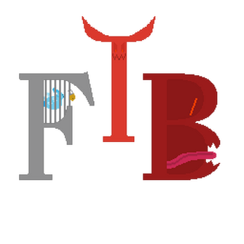

I don't have a lot of games still up from my past work, but I have completed three "demo-like" games (At least in terms of content). I never really got them to a state I fully liked, but they were finished projects nonetheless. The only one that is still accessible (at least without a direct link) is one called "Blank is the Fake" and can by found on my Itch page
Here's a list of everything I've done:

Feed the Beast - April 2020 | Link
Feed the Beast was my first released game, which was result of my first game jam:
Ludum Dare 46. It was a simple little puzzle game where you had to run
across the dungeon floor, completing various minigames to gather and craft items to feed the
beast. I made the logo (shown on the left) when I was still learning pixel art. It was
heavily based on
an old logo
from a group named Feed the Beast (I know, very creative). I pulled a few
all-nighters in the process of making this game, and I still have a lot of good memories from it. Right now, I'm a little
embarrassed of it and I think that's because I have built a higher standard for myself. But regardless, it was a good starting
point for me!
Spiritual Connection - Jan 2021 | Link
Spiritual Connection was the second game I released, and it was my entry for
Vimlark's VimJam game jam. This game was pretty special to me because one of my best
friends actually made some music for it (He's Lenom on SoundCloud)!
It was a simple little platformer where you had to traverse through the level to a "portal", which would then swap some objects
around. The main idea behind this game was based on the P-switch from Super
Mario. After reaching this portal, you would then have to go back through the level to the beginning with the new objects. I
was only able to design 4 levels, and they are not balanced very well. However, it was still something I've completed and I think
I improved a lot in art and desgin. But there is still a lot of work to do and improvements to make.
Blank is the Fake - Mar 2022 | Link
Blank is the Fake was the latest game I've released. I created it for the Brackeys
Game Jam 2022.1. This one was by far the least polished and fleshed-out. However, it still
has a place in my heart. I made a lot of design choices that I really liked (for example, all the transitions were "smooth"
with no "fade to black" transitions). It is a puzzle game based on a mixture of different puzzles found in my two favorite
Legend of Zelda Games: Phantom Hourglass
and Spirit Tracks. The end product wasn't
bad, and I did have plans to expand it past the jam's deadline. However, as it common with most of my projects, I quickly lost
interest and moved on.
{kind=link}